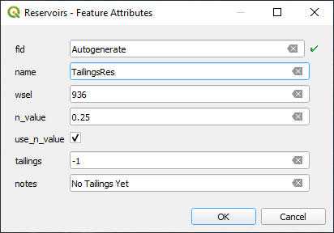
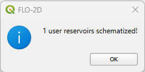
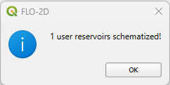
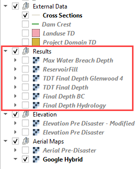

Dam and Levee Tool
Overview
This lesson will outline the process of setting up a dam with the Levee Tool, filling the reservoir with clear water, defining prescribed breach conditions, and running a simple, clear water breach model. The clear water model establishes that the reservoir and dam are set up correctly.
Required Files
The step makes use of Elevation Post Disaster and the Dam Crest. The required data is available at C:\Users\Public\Documents\FLO-2D PRO Documentation\Example Projects\Tailings Dam Breach Workshop\data\
File |
Content |
Location |
|---|---|---|
Elevation Pre Disaster - Modified.tif |
Elevation Pre Disaster - Modified |
..\6. Dam and Levee\data |
Dam Crest.shp |
Dam crest |
|
Elevation Correction.shp |
Elevation Correction |
|
Cross Sections.shp |
Cross sections |
Important
This video discusses why we apply different modeling practices in an area that was a Stack Collapse.
Note
This video shows how to set up a clear water dam and breach it using prescribed failure rates. It’s the primary modeling test before adding tailings to the model. This is not a stack collapse. That is another lesson.
Step 1: Interpolate Elevation Pre-Disaster Modified
The Pre Disaster DEM was modified using the FLO-2D Dam Removal Pre-processing tools. This is not covered in this workshop for the sake of brevity. More information can be found on the FLO-2D Plugin user manual.
Drag the Elevation Pre Disaster - Modified.tif file onto the map space.

To interpolate the elevation to the grid layer from a raster layer, use the Sample Grid Elevation icon.

Click on the Sample Grid Elevation icon and enter the required data in the dialog fields and click OK.

Step 2: Create dam
The extent of this dam is not realistic because this wasn’t a dam. It was stacked tailings. This lesson shows how to define a Tailings Dam. Another lesson will show how to set up stacks for failure.
Add the Dam Crest.shp onto map and zoom into the Tailings Dam.
Create the levee by selecting the Levee Lines under User Layers on the Layers.

Click Toggle Editing to start editing and then click on Add Line Feature to draw the Levee.

Draw the Levee line following the Dam Crest layer template.
Use the roller wheel on the mouse to zoom in and out while editing.
Use roller wheel click and drag function to pan while editing.
Right click to finish drawing the levee line. Fill the data as the following picture.
Click the Create Levees button.

Check only User levee lines and click Create Schematic Layers from User Layers button. Click ok to close the message.

The levee should look like this . The red lines are cutoff lines that prevent tailings deposits and water from moving downstream. They represent an thin vertical wall with a uniform elevation.

Step 3: Create reservoir
An initial condition is set to fill the reservoir when FLO-2D PRO.exe initiates the simulation.
Click the collapse widgets button and open the Initial Condition Editor widget.
Click the add reservoir button.
Click anywhere within the reservoir and fill the form with the following data. Click OK to close the data.
Do not use the Snapping Tool on this layer. The point will snap to the corner of a grid element and 4 reservoir nodes will be created.
Click the Save button first and the Schematize button.
 

Make sure only one grid element is schematized. Click OK.
It should look like this.
This data is saved to the INFLOW.DAT file when the model is exported.

Step 4: Run the simulation
Reports estimate that approximately 9.7 million cubic meters of material were involved in the failure. Therefore, the total storage of the reservoir should be in this range. This test shows how to see the reservoir volume and make sure the reservoir is not leaking.
Open the Control Parameters. Adjust the Simulation time for a quick simulation, check the Levees and uncheck Rainfall and Infiltration processes for this and the forthcoming runs. Click save.
Click the main Save icon on the QGIS toolbar.

Click the FLO-2D Data Export icon, set the export folder to Export Reservoir. The Project Folder on the Run Settings is automatically updated to the new Export Reservoir folder and it does not need to be updated.

Make sure to uncheck Rain and Infiltration and to check Levees.

Click on the Run FLO-2D icon to run the simulation.

Check the simulation summary.

Step 5: Check the reservoir volume
It is possible to check if the reservoir is filled or overfilled by using Maxplot and FLO-2D-Rasterizor.
MaxPlot: click on the drop-down arrow at the right of Run Simulation and click on Run MaxPlot.

MaxPlot: Select the Floodplain Maximum Flow Depths – Fluid and click OK.
MaxPlot: Check for any water flowing out the reservoir. In this case, there is no water flowing out the reservoir that was setup.
FLO-2D-Rasterizor: Open the Rasterizor plugin to check the results as the previous lessons.
FLO-2D-Rasterizor: Using this method, it is also possible to visualize that the water is not flowing out the reservoir.
Here is a sample of the INFLOW.DAT and the SUMMARY.OUT.
The volume stored in the reservoir is close to the reported storage volume. Minor adjustments to the reservoir elevation will achieve the reported volume.
The reservoir test showed that the reservoir was set up correctly.
Step 6: Set up breach failure
Set up the levee grid failure condition in QGIS. This location can represent a weak point on a dam: spillways, stilling basins, sag, deformation, or erosion, boreholes, ends points, etc.
It is important to start the breach from the correct side of the levee feature. The breach must be asigned to a levee cutoff that can fail. The grid elemet must contain water. The red arrows are places where a breach will not work. The green arrows are locations where a breach will work.

Using the Grid Info Tool, pick a grid element that has a levee with a configuration that will allow the breach.

Click the collapse button from the FLO-2D widget.
Open Levees and Breach Editor.
Select radio button for Prescribed Failure and click Levee Grid elements.
Enter levee grid element ID in the Individual Levee Data dialog and use the eye button to get to the selected levee element. Zoom in and zoom out can help to locate the grid.
Click the breach failure direction elevation box. When the box changes color, it is selected for failure editing.
Fill the form and Apply Change and Close.

This method is a simple test case to analyze the clear water levee failure routing mechanism. It doesn’t require very much data to initiate a failure. Once this method is working as desired, advanced failure methods can be applied to the dam or stacks.
Step 7: Add cross sections
The cross sections are used to compute hydrographs for flow crossing a line of cells, including floodplain, channel and street flow elements. The floodplain editor sets the FPXSEC.DAT file. The lines should be horizontal, vertical or diagonal to the grid elements. If the line is not very close to the grid alignment, the intersector may have trouble finding the correct alignment.
Add the Cross Sections.shp layer onto map.

Expand the Floodplain Cross Sections Editor and click on Add user floodplain cross-section.

Starting from the most upstream cross section to downstream, zoom into the first cross section. Following the Cross Sections layer, draw the cross section. Right click to finish drawing the cross section and name this cross section “Cross Section 1”.
Repeat this process to the other 4 cross sections. At the end, click on Save added floodplain cross-section.

The flow direction most perpendicular to the polyline must be assigned. Select each Floodplain XS name on the dropdown and set the flow direction as the table below.

Cross section name |
Flow direction |
|---|---|
Cross Section 1 |
7 |
Cross Section 2 |
3 |
Cross Section 3 |
7 |
Cross Section 4 |
8 |
Cross Section 5 |
7 |
Make sure that each cross section is assigned to a number 1 – 8 that is a flow direction most perpendicular to the polyline. An incorrect direction will result in incorrect discharge calculation.
Once all the flow directions are set, click on Schematize floodplain cross sections.

Click OK to close the message.
Uncheck the external Cross Sections layer and check if the cross sections were added correctly. The project should look like this.

Step 8: Export and run
Open the Control Variables and adjust the Time Control and Plot Variables.

Click the main Save icon on the QGIS toolbar.

Click the FLO-2D Data Export icon, set the export folder to Export Breach. The Project Folder on the Run Settings is automatically updated to the new Export Breach folder and it does not need to be updated.

Uncheck rain and infiltration and click OK.

Click on the Run FLO-2D icon to run the simulation.
Check the simulation summary. Close the window when the run is complete.

Step 9: Check the breach
Use FLO-2D-Rasterizor to check depth.out results to see the max flow depth.

To review floodplain cross sections hydrographs, use Hydrog. Open the dropdown menu by clicking on the arrow close to Run Simulation and open the Run Hydrog.

On the Hydrog, click on Plot Cross Section Hydrographs.

Select the first cross section for plotting and click OK.

The graph shows the Discharge on the y-axis and the time in the x-axis.

Using the New Hydrograph window, it is possible to navigate between upstream and downstream cross sections to check for any issues.
The clear water test shows that the breach and reservoir parameters are set up correctly. It is a simpler case and once the prescribed breach is working correctly, the tailings case is less likely to require troubleshooting.
Note that as the class progresses the changes in the modeling results can be compared by the maps loaded from FLO-2DRasterizor. Keep the maps organized for easy review of changes.
